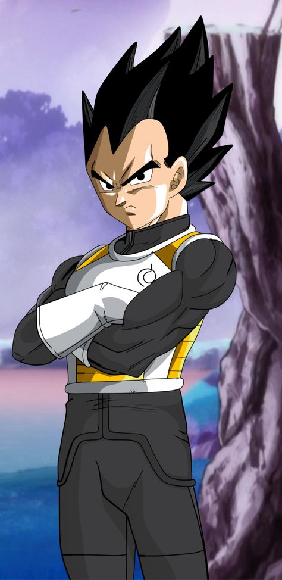

-

- WIKI
Vegeta
Bejeta

First Appearance
Dragon Ball Z Chapter 10 (1988)
Likes
Fighting Goku, Training, His Pride, His family
Dislikes
Those who insult his pride, Goku's idiocy
Appears in
Dragon Ball Z, Dragon Ball Super, Dragon Ball GT
Biography
First appearing as an antagonist in the Saiyan Arc, Vegeta eventually became the second main character
and Goku's most powerful ally. Originally a Saiyan bent on evil, due to the influence of living on Earth,
Vegeta eventually mellowed out and began to enjoy his new way of life and family. (Show More)
Special Moves
Galick Gun: A purple beam of energy that emenates from Vegeta's hands.
Was first used in order to destroy the earth due to Goku embaressing Vegeta's Pride.
It's roughly equal in strength to Goku's Kamehameha.
Final Flash: Vegeta's most powerful attack, Vegeta generally uses this attack when put into a tight situation.
It is a golden beam with sparks all around it signifying its unstable energy. Vegeta generally has to charge this
technique for a little while before he can fire it.
Big Bang Attack: A great ball of energy that explodes on impact. The blast is very powerful allowing
for Vegeta to defeat his enemies upon impact. Vegeta fires this move with one arm.
Transformations


{kind=link}
{kind=link}
{kind=link}
{kind=link}
{kind=link}